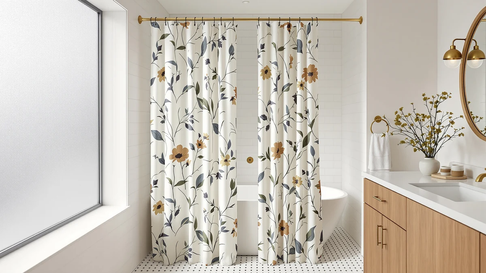

Martha Stewart Cotton Floral Shower Curtain Review (2026): Worth It?
Prices and picks verified as of November 2026. Independent, reader-supported reviews.


Quick Answer
This Martha Stewart cotton floral shower curtain review compares its 100% cotton build, 72 by 72 inch size, and $59.99 price against a pair of Bean Products organic cotton liners and a budget-friendly ANRODUO faux linen curtain. Shoppers who want a printed, farmhouse-style cotton curtain get the closest match here, while anyone chasing a lower price or a liner-free faux linen option should weigh the alternatives below first.
Our pick: Martha Stewart 100% Cotton Floral, $59.99 Check Price on Amazon
Bottom line: our top pick is the Martha Stewart 100% Cotton Floral Shower Curtain at $58.99.
Things to Know Before You Buy
- The Martha Stewart 100% Cotton Floral curtain is cut to a single 72 inch by 72 inch size, a standard fit for most tubs and shower stalls rather than an extra-long or extra-wide option.
- At $59.99, it costs about $16 more than Bean Products' two organic cotton liners and about $18 more than ANRODUO's faux linen curtain, both compared later in this review.
- Martha Stewart's own listing recommends adding a separate shower liner behind this curtain, since cotton does not seal out water the way vinyl, PEVA, or faux linen can.
- The listing does not publish a star rating or review count, so this review leans on the product specs and current pricing rather than a verified buyer track record.
This Martha Stewart cotton floral shower curtain review puts the curtain's 100% cotton build, $59.99 price, and 72 by 72 inch size next to three alternatives shoppers often weigh against it: two of Bean Products' organic cotton liners and a lower-priced ANRODUO faux linen curtain. Martha Stewart builds this one around a botanical floral print in Garden Green on a white backdrop, a pattern choice that sets it apart from the plain, undyed liners in this comparison. That printed, decorative angle affects who the curtain suits, since a shopper after pattern and farmhouse styling is weighing a different priority than one after the lowest price or a liner-free setup.
We built this comparison from the product listings, current Amazon pricing, and the material and size specifications each brand publishes for its own curtain or liner. None of the four options here lists a star rating or review count, so price, size, and construction carry more weight in this review than they would for a product with an established review history. The Martha Stewart curtain sits in the middle of the price range in this group at $59.99, roughly $16 more than either Bean Products liner and about $18 more than the ANRODUO curtain. A reader deciding purely on price can stop there; a reader who cares about pattern, exact size, or liner-free construction needs the detail in the sections below.
Why You Should Trust Us
Ilane Tall has covered bathroom fixtures and shower hardware for Best Shower Curtains since the site launched, and this Martha Stewart cotton floral shower curtain review follows the same research process used across the site: comparing manufacturer listings, current pricing, and published specifications rather than running a physical testing lab. We do not own a lab, and we do not claim hands-on use of any curtain or liner we cover, including this one. Instead, we pull the dimensions, materials, and prices straight from each retailer listing, then compare them against the other options a shopper is likely to consider at checkout. The full methodology behind every review on this site lives on our how we research page, and we followed that same approach here, from the price comparison through the final verdict.
How We Compared
Our process for this Martha Stewart cotton floral shower curtain review starts with each brand's own listing: material, dimensions, pattern, and price, cross-checked against the three comparison products on the same criteria. None of the four listings publishes a star rating or review count, so we weighted the comparison toward verifiable facts, material composition, exact size, and current price, instead of leaning on review volume that simply is not there for any of them. We did not purchase, install, or hang any of the four products ourselves. A printed cotton curtain like this one occupies a specific niche among farmhouse-style shower curtains because it pairs pattern with a natural fabric, and that combination separates this Martha Stewart pick from the plain organic liners and the faux linen curtain more than any other spec in the comparison.
Overview & Specs

Martha Stewart 100% Cotton Floral
What we like
- 100% cotton construction with a botanical floral print, a pattern option none of the three comparison products offers
- 72 inch by 72 inch size fits most standard tubs and shower stalls without needing a custom cut
- Buttonhole header works with standard shower hooks, so no separate rings or clips are needed
Flaws but not dealbreakers
- The listing does not publish a star rating or review count, unlike more established curtains reviewed elsewhere on this site
- Martha Stewart's own listing recommends a separate liner, adding a cost and a step that ANRODUO's thicker faux linen curtain in this comparison does not require
| Material | 100% cotton |
| Size | 72"W x 72"L (Pack of 1) |
Martha Stewart builds this curtain around two choices that work together: 100% cotton fabric and a botanical floral print in Garden Green on a white backdrop, part of the brand's Garden Collection. That combination is what separates this pick from the other three products in this comparison, since Bean Products' two liners stay undyed and ANRODUO's curtain uses a faux linen weave instead of cotton. The curtain ships in one size, 72 inches wide by 72 inches long, which covers most standard tubs and shower stalls without requiring a custom cut. At $59.99, it sits in the middle of the price range in this group, costing more than Bean Products' $43.52 organic cotton liners and ANRODUO's $41.99 faux linen curtain, but it is the only option here with a printed pattern.
The tradeoff for the pattern and natural fabric is water resistance. Cotton alone does not seal out water the way vinyl, PEVA, or a thick faux linen weave does, and Martha Stewart's own listing recommends pairing this curtain with a separate liner for that reason. That is a different setup than ANRODUO's curtain in this comparison, which the brand markets as thick enough to skip a liner entirely. The listing also does not publish a star rating or review count, which means this Martha Stewart cotton floral shower curtain review has less third-party feedback to draw on than a product with an established sales history. For a bathroom where a printed, farmhouse-style cotton curtain is the priority and the budget allows for a liner on top, this curtain delivers on the one spec that matters most. Shoppers mainly chasing a lower price or a liner-free setup should look at the alternatives below first.
What We Liked
The clearest strength in this Martha Stewart cotton floral shower curtain review is the pattern. A botanical floral print in Garden Green on a white backdrop gives a bathroom a decorative, farmhouse-leaning look that none of the three comparison products attempts, since both Bean Products liners stay undyed and ANRODUO's curtain is a solid beige. The 72 by 72 inch size also matches what Amazon lists as a standard shower curtain dimension, so most shoppers can order it without measuring a rod or tub first. The buttonhole header is another practical point in its favor, since it works with standard metal or plastic shower hooks without needing special clips. Compared against Bean Products' narrower, stall-width liners, this full 72 inch width gives it a wider fit without sacrificing the same cotton-first construction.
What Could Be Better
Price is the most obvious drawback in this comparison. At $59.99, the Martha Stewart curtain costs roughly $16 more than Bean Products' White Organic Cotton and Natural Organic Cotton liners at $43.52 each, and about $18 more than ANRODUO's $41.99 faux linen curtain. A shopper comparing strictly by price will notice that gap immediately. Cotton also is not a waterproof fabric on its own, and Martha Stewart's listing recommends a separate liner behind it, which adds a cost and a step that ANRODUO's thicker faux linen curtain in this comparison does not require. On top of that, the listing does not publish a star rating or review count, so this review has no verified buyer feedback to weigh against the three alternatives. None of these issues makes the curtain a poor choice, but they are the factors a shopper should weigh before paying the middle price in this group for a pattern none of the others offers.
Who Is It For?
The Martha Stewart cotton floral shower curtain fits a shopper who wants a printed, decorative cotton curtain and is willing to add a separate liner to get it. It suits a standard-size tub or shower stall, since the 72 by 72 inch cut is a common fit rather than an oversized or extra-long one. It is a reasonable match for a bathroom where farmhouse styling and pattern matter as much as function, and less of a fit for a shopper who wants the lowest price or a liner-free setup. Shoppers who want the same cotton-first approach at a lower price should compare Bean Products' organic cotton liners below before buying, and anyone who wants to skip a separate liner entirely should look at the ANRODUO curtain in the same lineup.
Alternatives to Consider
If the Martha Stewart curtain's price or its need for a separate liner rules it out, these three alternatives cover two lower-priced organic cotton liners and a liner-free faux linen curtain. All three undercut the Martha Stewart curtain on price, and the ANRODUO option swaps cotton for a thicker faux linen build entirely, so switching between them is a question of budget, size, and whether you want to skip a liner rather than a jump to a different kind of product.

Also Great
Bean Products White Organic Cotton
Bean Products' White Organic Cotton liner costs $43.52, roughly $16 less than the Martha Stewart curtain, trading the floral print for a plain organic cotton liner cut to a 36 by 74 inch stall size.
$43.52
Check Price on Amazon
Also Great
Bean Products Natural Organic Cotton
Matching its White Organic Cotton sibling at $43.52, Bean Products' Natural Organic Cotton liner offers the same savings over the Martha Stewart curtain with an undyed, 36 by 72 inch natural finish instead.
$43.52
Check Price on Amazon
Best Value
ANRODUO Beige Extra Long Linen
At $41.99, ANRODUO's Beige Extra Long Linen curtain is the lowest-priced pick here, and its thicker faux linen weave is built to skip a separate liner, unlike the cotton options in this comparison.
$41.99
Check Price on AmazonDoes the Martha Stewart cotton floral shower curtain need a separate liner?
Yes.
What size is the Martha Stewart cotton floral shower curtain?
It ships in a single 72 inch by 72 inch size, a standard fit for most tubs and shower stalls.
Frequently Asked Questions
Does the Martha Stewart cotton floral shower curtain need a separate liner?
Yes. Martha Stewart's own listing recommends pairing this 100% cotton curtain with a separate shower liner, since cotton does not seal out water the way vinyl or PEVA does. Shoppers who want to skip that extra step should compare ANRODUO's faux linen curtain in this review, which the brand markets as thick enough to use without a liner.
What size is the Martha Stewart cotton floral shower curtain?
It ships in a single 72 inch by 72 inch size, a standard fit for most tubs and shower stalls. Shoppers who need extra length for a taller or walk-in shower should compare ANRODUO's 72 by 108 inch curtain later in this comparison.
Is the Martha Stewart cotton floral shower curtain worth it compared to the Bean Products and ANRODUO alternatives?
At $59.99, it costs about $16 more than Bean Products' White Organic Cotton and Natural Organic Cotton liners, both $43.52, and about $18 more than ANRODUO's $41.99 faux linen curtain. The premium buys a printed botanical pattern that none of the other three options offers, so shoppers who want pattern should expect to pay more, while budget-focused shoppers should compare the lower-priced picks first.
Final Verdict
This Martha Stewart cotton floral shower curtain review comes down to pattern versus price. Martha Stewart charges $59.99 for a 100% cotton curtain with a botanical floral print, more than Bean Products' $43.52 organic cotton liners and ANRODUO's $41.99 faux linen curtain, neither of which offers a printed design. The three alternatives trade that pattern for savings or, in ANRODUO's case, a thicker build that skips the need for a liner. For a shopper who wants a printed, farmhouse-style cotton curtain and does not mind adding a separate liner, the Martha Stewart 100% Cotton Floral is worth the higher price. Shoppers chasing the lowest cost or a liner-free setup should compare Bean Products' organic cotton liners or the ANRODUO curtain first. None of these four products asks for more than $60, so the downside of choosing wrong is a short wait for a return label, not a wrecked budget.